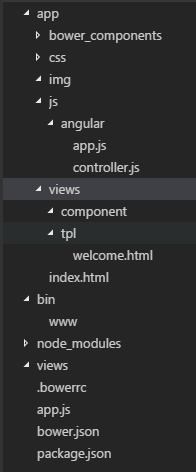
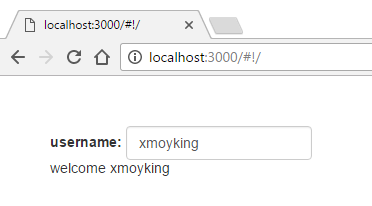
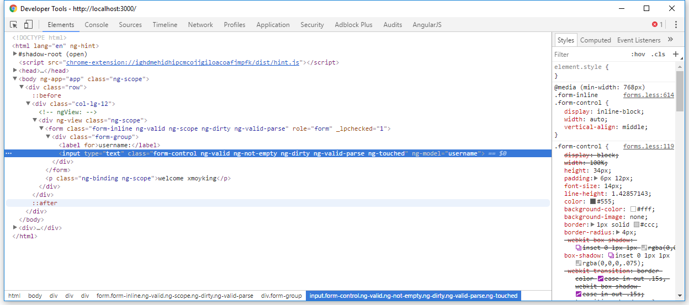

angularjs入门笔记-4-angularjs1,express4,
各种ng的依赖让人绝望，实在无法让人安心开发，折腾了好久， 还有bower的依赖问题也是很麻烦，下载需要很久。
参考资料快速搭建Web环境 Angularjs + Express3 + Bootstrap3
使用express init命令创建一个项目，然后将目录结构改为如下：

其中需要用到bower，同时需要使用bower安装angular，angular-route，bootstrap，angular-bootstrap
bower.json中具体依赖如下，此文件可使用bower init命令生成，然后手动添加依赖即可1
2
3
4
5
6
7
8
9
10
11
12
13
14
15
16
17
18
19
20
21
22
23{
"name": "ng1-express4",
"description": "",
"main": "",
"authors": [
"xmoyking <xmoyking@gmail.com>"
],
"license": "MIT",
"homepage": "",
"ignore": [
"**/.*",
"node_modules",
"bower_components",
"test",
"tests"
],
"dependencies": {
"angular": "1.6.4",
"angular-route": "1.6.4",
"bootstrap": "^3.3.7",
"angular-bootstrap": "^2.5.0"
}
}
然后使用bower install命令安装依赖的库（需要一段时间，个人感觉挺长的）
将根目录下的app.js修改：1
2
3
4
5
6
7
8
9
10
11
12
13
14
15
16
17
18
19
20
21
22
23
24
25
26
27
28
29
30
31
32
33
34
35
36
37
38
39
40
41
42
43
44
45
46
47
48
49var express = require('express');
var path = require('path');
var favicon = require('serve-favicon');
var logger = require('morgan');
var cookieParser = require('cookie-parser');
var bodyParser = require('body-parser');
var ejs = require('ejs');
var app = express();
// view engine setup
app.set('views', path.join(__dirname, 'views'));
app.engine('.html', ejs.__express);
// app.set('view engine', 'ejs');
app.set('view engine', 'html'); // 将ejs替换为html
// uncomment after placing your favicon in /public
//app.use(favicon(path.join(__dirname, 'public', 'favicon.ico')));
app.use(logger('dev'));
app.use(bodyParser.json());
app.use(bodyParser.urlencoded({ extended: false }));
app.use(cookieParser());
app.use(express.static(path.join(__dirname, 'app'))); //将静态目录设置为app目录，元public目录没有使用
// catch 404 and forward to error handler
app.use(function(req, res, next) {
var err = new Error('Not Found');
err.status = 404;
next(err);
});
// error handler
app.use(function(err, req, res, next) {
// set locals, only providing error in development
res.locals.message = err.message;
res.locals.error = req.app.get('env') === 'development' ? err : {};
// render the error page
res.status(err.status || 500);
res.render('error');
});
// angular启动页
app.get('/', function (req, res) {
res.sendfile('app/index.html');
});
module.exports = app;
主要是做修改view engine和express静态目录两个中间件，其他的大部分的代码保持原样即可，不需要修改太多
然后将app/angular/app.js写如下代码：1
2
3
4
5
6
7
8
9
10
11
12
13
14
15
16
17;
var app=angular.module('app', ['ngRoute']);
app.config(['$routeProvider', '$locationProvider', function($routeProvider, $locationProvider){
$routeProvider.when('/',{
templateUrl: '/views/tpl/welcome.html',
// controller: 'welcomeCtrl' // 注释这句，否则会报错，具体原因不明
}).otherwise({
redirectTo: '/'
});
$locationProvider.html5Mode({
enable: true,
requireBase: false
});
}]);
浏览器报如下错误，表示没有用到controller1
2Error: [$controller:ctrlreg]
// 删除routeProvider中的controller解决报错，但是却没有加载controller
app/angular/controller.js代码 ：1
2
3
4
5;
function welcomeCtrl($scope) {
$scope.username = 'king';
}
app/index.html代码如下：1
2
3
4
5
6
7
8
9
10
11
12
13
14
15
16
17
18
19
20
21
22
23
24
25
<html lang="en">
<head>
<title></title>
<meta charset="UTF-8">
<meta name="viewport" content="width=device-width, initial-scale=1">
<link rel="stylesheet" href="bower_components/bootstrap/dist/css/bootstrap.min.css">
<link href="css/style.css" rel="stylesheet">
<script src="bower_components/angular/angular.min.js"></script>
<script src="bower_components/jquery/dist/jquery.min.js"></script>
<script src="bower_components/bootstrap/dist/js/bootstrap.min.js"></script>
<script src="bower_components/angular-route/angular-route.min.js"></script>
<script src="bower_components/angular-bootstrap/ui-bootstrap-tpls.min.js"></script>
<script src="js/angular/controller.js"></script>
<script src="js/angular/app.js"></script>
</head>
<body ng-app="app">
<div class="row">
<div class="col-lg-12">
<div ng-view></div>
</div>
</div>
</body>
</html>
主要是添加各种js和依赖文件
app/views/tpl/welcome.html代码如下：1
2
3
4
5
6
7
8<form class="form-inline" role="form">
<div class="form-group">
<label for="">username:</label>
<input type="text" class="form-control" ng-model="username">
</div>
</form>
<p>welcome {{username}}</p>
最后执行npm start即可在浏览器的localhost:3000打开这个demo应用了


关于angularjs1，jquery和bootstrap，个人感觉实在太笨重，本例仅仅作为入门折腾使用，开发环境还是不要使用这套搭配来的好。